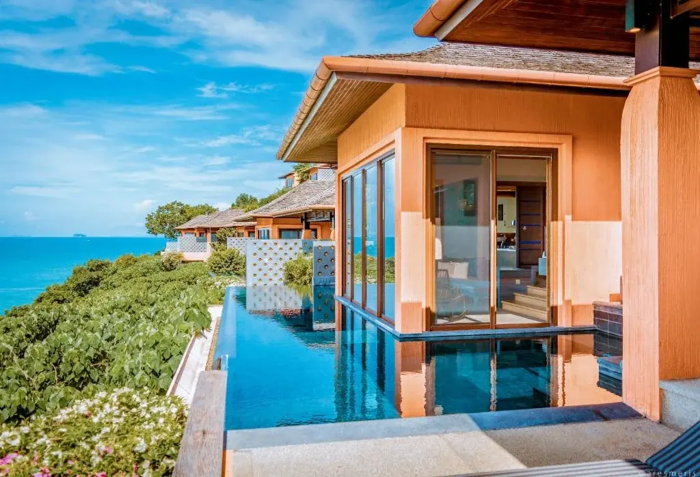
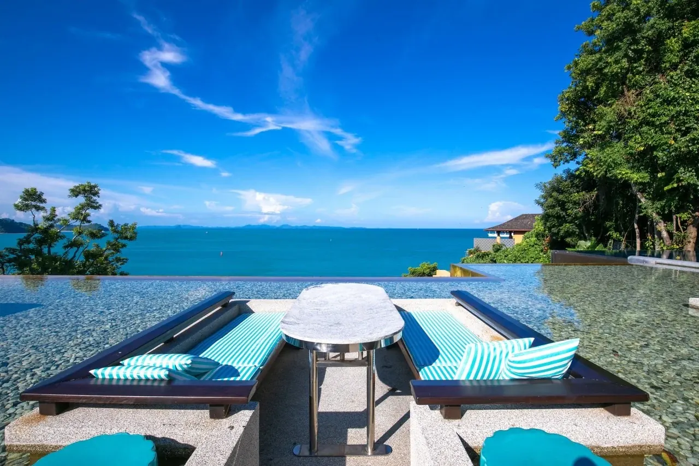
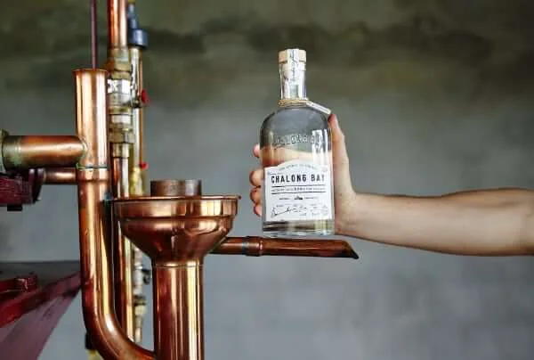
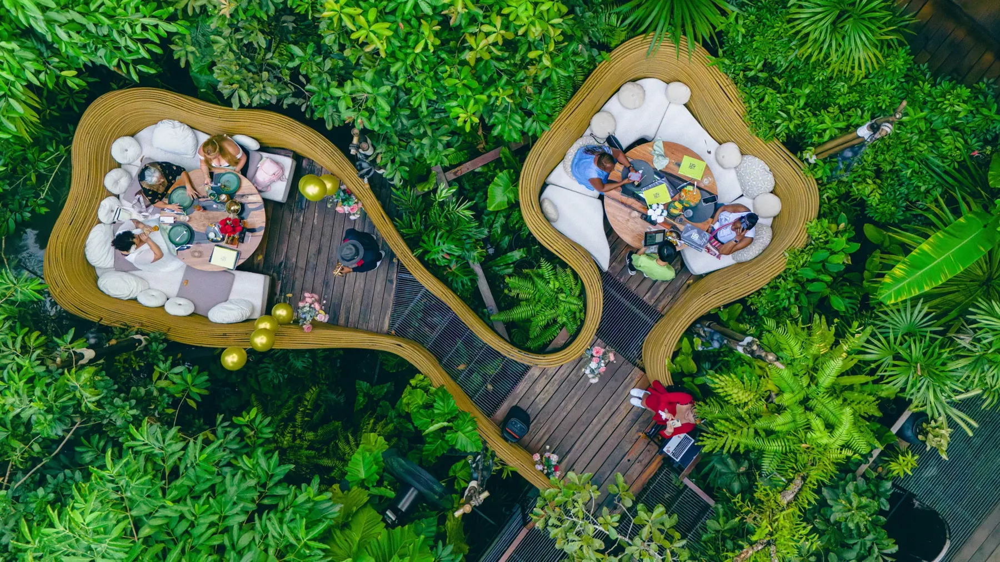
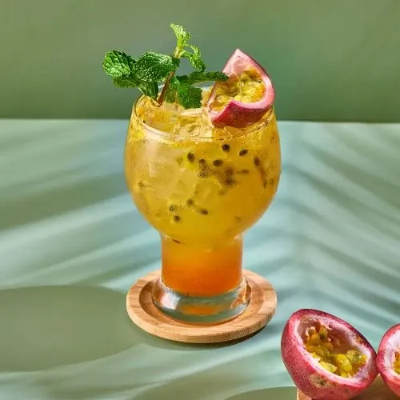
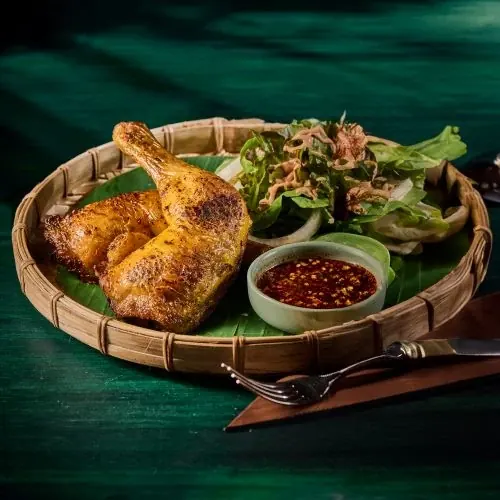

Two weeks at Sri Panwa with family — slow mornings, beautiful meals, a few unforgettable Phuket outings, and plenty of time to simply enjoy being together.
January 11–25, 2027Sri Panwa · Cape PanwaFamily holiday
Home base
Two weeks by the Andaman Sea
Sri Panwa is the center of the trip, not just where we sleep. We’ve left generous room for villa mornings, private-pool time, the beach, spa treatments, long lunches and the resort’s daily activities — with one memorable outing at a time.
Resort activity schedule: Sri Panwa’s currently published sheet is for Oct–Dec 2026, so the January 2027 version should be reconfirmed with the concierge when it is released.
Us + SparrowOur family base at the resort
Gail & LyonsArrive Jan 11 · depart Jan 21
Scott & SheilaArrive Jan 14 · depart Jan 25
Trip rhythmOne main outing at a time, with flexibility around Sparrow
At Sri Panwa
Easy resort dining
Ocean-view lunches, Japanese favorites, Thai dishes to share, and sunset drinks — plenty to look forward to without leaving the resort.
These are the currently published recurring activities and give us optional structure without over-scheduling the trip.
Monday
8–8:45 AM · Aerial yoga
1–3 PM · BDMS consultation + InBody
2–3 PM · Bracelet making
5–6 PM · Sunset walk
Tuesday
8–9 AM · Hatha Vinyasa Yoga
9–10 AM / 3–4 PM · Kayak island tour
2–3 PM · DIY keychain
3–4 PM · Thai boxing
3–4 PM · Contrast therapy
Wednesday
10–11 AM · Thai boxing
1–3 PM · BDMS consultation + InBody
2:30–3 PM · Kids yoga
3:30–4 PM · Tai Chi
Thursday
6:30–7:30 AM · Sunrise yoga
2–3 PM · DIY keychain
2–3 PM · Herbal inhaler class
3–3:45 PM · Functional training
Friday
8–8:30 AM · Mobility + flexibility
1–3 PM · BDMS consultation + InBody
2–3 PM · Turtle experience
3–4 PM · Thai boxing
3–4 PM · Contrast therapy
Saturday
8–8:45 AM · Body weight
9–10 AM / 3–4 PM · Kayak island tour
2–3 PM · Canvas painting
3–3:45 PM · Hatha yoga
Sunday
8–8:45 AM · Body stretching
2–3 PM · Bracelet making
3–4 PM · Body combat
Bing Su pass-around at Forest Waterfall Pool
Daily: cooking class at Baba Sunset Lounge at 12 PM and 3 PM. Yoga / boxing can also be arranged on request, and island excursions are available with advance reservation.
A relaxed rhythm of resort time, food, culture and a few special outings — with the practical details tucked away when you need them.

Monday
January 11
Arrival + reset
Jet lag day at the resort
At Sri PanwaNo drivingLow-key
Gail and Lyons arrive. We’ll settle into our villa, enjoy the private pool and view, and keep the evening simple so everyone can recover from travel.
Plan & timing
Check in, unpack, and relax at the villa.
Casual resort dinner and an early night.

Tuesday
January 12
Resort day
Spa, private pool & hotel restaurants
Stay on propertySpa dayPrivate pool
A full resort day with no need to leave Sri Panwa. We can book massages, spend time in the villa pool, and try one of the resort restaurants.

Option 1 · guided tour
Distillery Visit
A welcome mojito, a behind-the-scenes visit through the sugarcane garden and French copper still, and a tasting of nine spirits: six rums, two gins and one vodka.
Make and sip two Chalong Bay rum cocktails at your own fully stocked station. Includes a guided tour and the nine-flavour tasting: six rums, two gins and one vodka.
A day out for Gail & Lyons: visit The Distillery Phuket, home of Chalong Bay Rum, and enjoy a seafood lunch at Kan Eang @ Pier. Choose the guided Distillery Visit or the Mini Rum Cocktail Workshop above.
Plan & timing
Book a Distillery Visit slot that leaves time for Kan Eang lunch afterward.
If we choose the Mini Rum Cocktail Workshop, have an earlier Kan Eang lunch first, then head to the distillery for the 2–3:30 PM workshop.
Kan Eang @ Pier, Chalong Bay. A true Phuket institution, one of the island’s oldest and most famous seafood restaurants, going strong for about 50 years and rated 4.5 stars across thousands of reviews. You sit right on the bay under the trees, pick your catch from the live tanks, and watch the boats come in. The reputation rests on decades of fresh, consistent seafood and generous plates: whole fish grilled in salt, garlic prawns, chili crab, steamed shellfish, with a full menu of non-seafood Thai dishes so everyone is covered.
We’ll arrive when the gates open so there’s time for the 100-Year Thai Village, Naga Courtyard activities, and buffet dinner before the main performance.
We’ll explore Old Phuket Town, have lunch at Blue Elephant in its beautiful heritage mansion, then browse the Sunday Walking Street market when it opens at 4 PM.
Blue Elephant: what makes it special. It lives inside the Phra Pitak Chinpracha Mansion, a landmark Sino-Portuguese mansion built in 1903 that was once the Governor of Phuket’s home. The cuisine is Royal Thai, where award-winning Chef Nooror Somany Steppe takes diners through traditional Thai heritage dishes drawn from the royal courts and literature of the Kings of Thailand.
On awards, Blue Elephant Phuket was awarded a Michelin Plate in the Michelin Guide Phuket, and Chef Nooror won a Hospitality Asia Platinum Award as one of the most creative chefs in Asia. It is repeatedly called one of the most romantic spots for Thai food on the island.
We’ll head to Central Mall in the late afternoon, timing our visits to Aquaria and MAYA Media Art Museum so we can go straight to a 7 PM dinner at Su Va Na, the separate underwater fine-dining restaurant. If Sparrow needs to burn off some energy, we can stop at OTO Play Park in the mall.
Su Va Na, the underwater restaurant. Dinner inside Aquaria Phuket, Thailand’s largest aquarium, seated against the glass as more than 25,000 fish, rays and sharks pass by and mermaids swim overhead. It was named the World’s Best Underwater Restaurant at the 2024 World Culinary Awards and sits among Phuket’s Top 25.
Executive chef Atanu Nath, trained in Europe with Japanese and Indian influences, serves a multi-course tasting menu, with four different tasting menus to choose from (seasonal, pescatarian, non-seafood and vegan) so each dining guest can have their preferred tasting experience.
Plan & timing
Head to Central Mall and explore Aquaria and MAYA Media Art Museum before dinner.
OTO Play Park at the mall if Sparrow needs to burn off some energy and there’s time before dinner.
Dinner at Su Va Na. The restaurant serves dinner only.
Su Va Na dress code: Upscale casual or formal attire is welcome. Dress shorts are allowed when paired with a collared polo shirt and covered shoes. No slippers, sandals, flip-flops, beachwear or sleeveless shirts.Dress code & reservations ↗
Children under 7: Su Va Na provides a supervised play area only steps from the table. A certified nanny supervises the child and can bring them to and from the parents’ table as needed. This service is mandatory for children under 7 and costs 1,500 THB per child.
A completely open day for the pool, beach, spa, snorkeling or whatever feels right. No cooking class today — our second class is on January 21 at noon.



Wednesday
January 20
Wildlife, lunch + farewell dinner
Bukit Elephant Park + 3 Monkeys Restaurant
1.5-hour elephant visit~35–40 min from resort~13 min to lunch
We’ll do the short experience at Bukit Elephant Park in the morning, then drive to 3 Monkeys Restaurant for lunch. We have the option to eat in one of the bird’s nest tables, tucked into the tropical greenery. In the evening, we’ll gather for a farewell dinner at the resort before Gail & Lyons leave tomorrow.
Plan & timing
Bukit Elephant Park short program.
About 13 minutes to 3 Monkeys Restaurant.
Optional bird’s nest seating in the jungle setting.
Cooking class · 12 PMLeave for airport · ~8 PMFlight · 12:25 AM Jan 22
Our second cooking class is at 12 PM, with the afternoon free to relax and pack. Gail & Lyons leave the resort for the airport at about 8 PM. Their 12:25 AM flight is just after midnight on Friday, January 22.
Plan & timing
Cooking class #2 at Sri Panwa.
Relax, pack and enjoy the last few hours together.